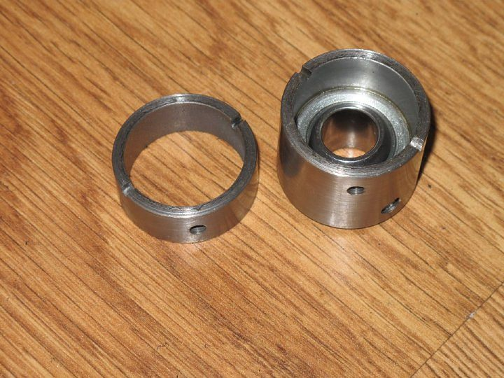
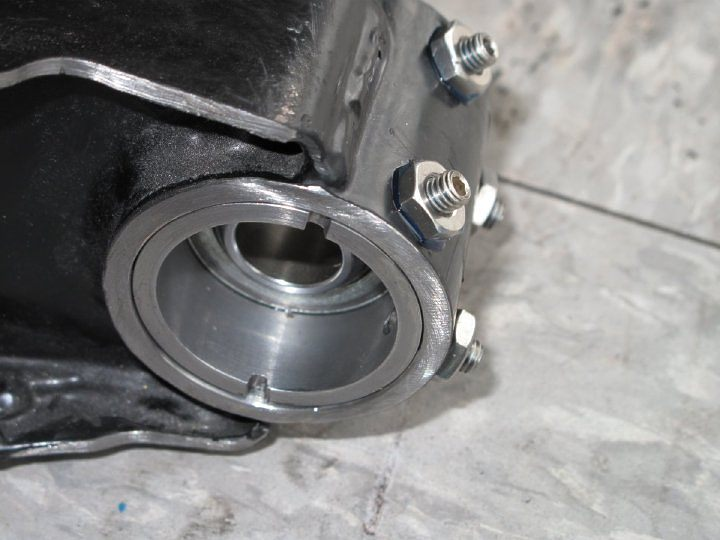
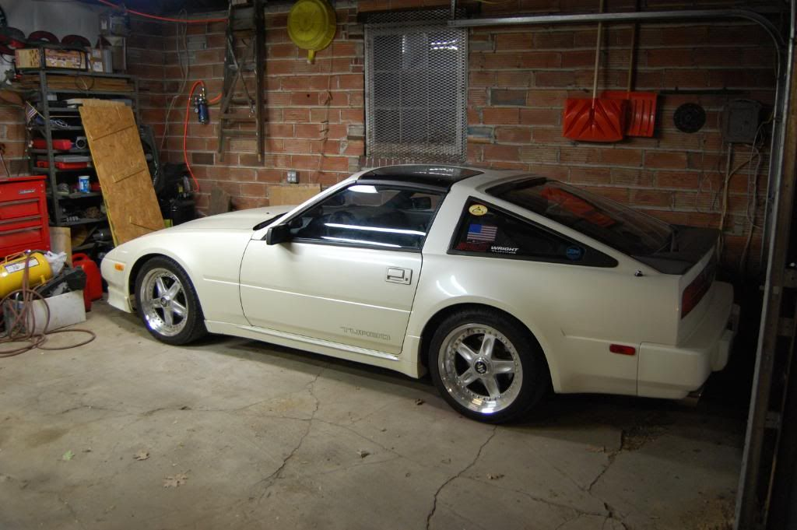

-
Gentlemen:
I have completed the modification and installation of my rear suspension utilizing Gary's kit and instructions. I will forewarn you; this is not an upgrade for the shy or timid!!! You will need time, patience, skills, tools, and a big chunk of change laying around. The good news is that afterwards you will be happy with the results. Admittedly, I have an issue with my passenger side control arm which slightly skews the results. I received both control arms from a junk yard off an '88 turbo and have no idea of their history. The reason I mention this is because after performing the modification, I was still not able to remove all of the negative camber from the right side. I could only get to -0.5 degrees with maximum adjustment. On the left side I could go from -2.0 to 0.5. Afterwards, I swapped out my rear red Tokico spring set to an older black set of Eibach springs, which are slightly longer. I had originally swapped out the black Eibach set because they jacked up the rear end of my Z like a '70 Chevelle. Mark from Vegas sent me a set of his red Tokico springs with shaved upper spring seats to drop it down. Well, it does effectively drop it down, but doesn't allow me to achieve proper alignment due to what I assume is a bent control arm. So now with the black Eibach's back in, I can achieve o.o degrees camber on both sides, however the passenger side is maxed out. Since I never want to achieve positive camber I don't really care. The passenger side is approximately 1/4-3/8" up from the bottom at 0.0 or 90.0 on the digital level. I did not take the time to check maximum range with the new spring set, but would assume on the driver's side that I could go from -1.75 to 0.75 degrees and -2.00 to 0.0 on the passenger side. I am very happy with this and can now finally buy some new tires. A great many thanks must go out to Gary for providing this excellent design!!!
I should also note here, that I made a mod that is not listed in Gary's procedure. I moved the two inside toe adjustment cages forward approximately 1/4" of an inch and then opened up the slots to allow for more toe adjustment. This worked very effectively as now I am not maxed out trying to achieve proper rear toe. I was able to achieve perfect neutral 0.0 rear toe with the locater lines/notches on the eccentric bolt (head side, not the nut) at approximately 4 O'Clock on each side, previously they were maxed out at 9 O'Clock. See Pictures for better illustration.

2006 & 2007 Basketball National Champions! 2005, 6, & 7 Basketball SEC Champions! 2006 Football National Champions! 2006 Football SEC Champions! 2008 SEC Champions! 2008 Football National Champions! First University in history to capture three titles in a single year! I was there at all of them, and it was awesome! Go Gators! -
Just in case some of you would like to see a few more pictures of the "process", I am going to post quite a few pictures of along the way…
Someone commented along time ago what my powder coated suspension would look like after a year of driving, well here it is after more than two! Not too bad.
GE's LSD mount looks like new still
Original right side camber was way off at -2.9 degrees!
Original left side camber was not much better at -1.9 degrees.
Original location of inner CA bushings, note that they are maxed out forward and still could not achieve proper rear toe.
In order to achieve proper rear toe, I decided to remove all four inner cages and weld them back on 1/4" forward and then extend the factory slots.
Note limiting factor.
First placement of new GM camber brackets
Another view
These are the four sleves that must be removed from the control arms, I used the reciprocating saw method.
After hours of resizing and polishing the inside area where the above sleeves were removed will look like this. I recommend several 1.50 " 60 & 80 grit rotary flap wheels.
Another view, note that 1/4" on each side of the cylinder has been removed and filed flat all ready.

Bearing retainers and spherical bearing out of cylinder all ready drilled and tapped.
Bearing retainers and spherical bearing installed in cylinder without grease seals.
Bearing retainers and spherical bearing installed in cylinder without grease seals.

Width measurement
GM supplied drill self adhesive template, very nice touch!
Mid process of drilling and tapping, which is very tedious by the way. I was lucky and did not manage to break off a tap.
="http://www.garymolitor.com/Alenius/Rear-suspension-mod_3-25-09_(4).jpg" alt="" />
Close up of installed bearing retainer.

Cross-member after welding and some reshaping of the new SS brackets, much more is required and depending on how picky you are can take days of work!
Another view
Another view
Another view
Another view
Another view
Another view
After powder coating
After powder coating with urethane bushings installed

Completed control arm close up.
Close up of new bracket after powder coating
Another angle
Relocated toe brackets
Original plan, but could not use acorn nuts due to clearance issues, note if weld flange is ground off in between mounting brackets clearance is not an issue. I learned this after powder coating was complete unfortunately.
Went ahead and did a four wheel brake job with new Hawk HPS pads
Part numbers for those who might need these, note fronts are for 30mm Z32 1990 TT.
Hopefully, these will be useful for anyone attempting this modification in the future!2006 & 2007 Basketball National Champions! 2005, 6, & 7 Basketball SEC Champions! 2006 Football National Champions! 2006 Football SEC Champions! 2008 SEC Champions! 2008 Football National Champions! First University in history to capture three titles in a single year! I was there at all of them, and it was awesome! Go Gators! -
CAG8OR: Your control arms are most likely not bent. Both my S12s gave me the same alignment problem in the back, including other S12/Z31/Nissans(s13/14 etc) specs that I have seen. It's because the passenger side of the chassis is lower(or driver side higher) that makes the alignment off. The only way for you to correct this is with spring perches/sleeves and having the car corner weighed and balanced. Even the FSM confirms this by having the S12 front passenger side spring longer than the driver. I'm sure the Z31 is the same. Either way nice work! I can't wait to get parts machined.
-
Hey Gary, do you think you could redesign the toe adjustment also? I can draw a VERY rough sketch of something like that. Something similar to the camber one but for the toe. Like the Datsport one. Maybe the camber ones can be rotated and achieve the same results. Anyway I'll email you in a few days. -
mod_mastaz wrote: Hey Gary, do you think you could redesign the toe adjustment also? I can draw a VERY rough sketch of something like that. Something similar to the camber one but for the toe. Like the Datsport one. Maybe the camber ones can be rotated and achieve the same results. Anyway I'll email you in a few days.
See:
Forum Index -> Fabrication - What you've made -> BARTCO cnc services
BARTCO wrote: oh im also almost done with the rear camber fix… the way im doing you will have 0degrees of camber thru the whole swing of the arm travel and once you set the height you want to have your car ride at you can add 1-3degrees then, and if you want to change your height you can 0 out the arms again set up the new height and once again dial in the camber you want … so no more nasty 5-8degree cambers and shredded inner tires after 5000miles… i should have the kit done in the next 2weeks or so -
i know this is off topic, but whats the chance of getting some more info on that lsd mount??? :twisted: :twisted:SS
Support RRR Z Parts!!!!

-
I was made by G-E years ago.Bolt on, fast, z31. You can only pick two.
Old weaksauce numbers: 391hp/433tq

-
Yes, G-E made it for me.2006 & 2007 Basketball National Champions! 2005, 6, & 7 Basketball SEC Champions! 2006 Football National Champions! 2006 Football SEC Champions! 2008 SEC Champions! 2008 Football National Champions! First University in history to capture three titles in a single year! I was there at all of them, and it was awesome! Go Gators! -
Not really a bump, since this is a sticky:
but anyone who may want to correct camber in the rear can probably use these:
http://www.e30tech.com/forum/showthread.php?t=80410 -
Nice link, but thats a lot of bread.Careless wrote: Not really a bump, since this is a sticky:
but anyone who may want to correct camber in the rear can probably use these:
http://www.e30tech.com/forum/showthread.php?t=80410
If I get my job soon im going to re-do my rear camber. Instead of the 1 inch slot im going lower, and bigger with the Eccentric bolts from a cressida. They have more adjustment.
What is that leveling tool you got there called? Id like to make a jig to fiqure my camber. I usually just use a HUGE right angle and guess.My Build Thread -
Russ and I just got done doing my SS, we started with Gary's design and made a few changes.
We used a little bit different bracket to adjust the camber, which required some frame pounding to clear.
Before: stockish height with ~2deg of camber in rear:
After: 2ish inches lower with ~1deg of camber:

It needs to come up a bit, i don't think the bilsteins like being so low.
*****************************
1988 300ZX Turbo SS
2000 BMW 323Ci
2003 BMW 325XiT -
The adjustment bracket was James' idea. We used a 5/8" grade 8 bolt instead of the custom one that Gary had made. The 5/8" bolt is the same size we used on the control arms on the live axle swap we did on the White mule. I didn't think that the oem size bolt was strong enough because we were going from a 2" sleeve to a 3/4" wide bearing.
Everything seemed to work out pretty well. Just have to get the car corner weighted and aligned then Dave will see if it can keep up with me at an autoX event.…and how much HP do you have at 0 boost -
I been watching this thread for a while, but I always wonderd why do you use these types of bearings…Isnt the factory one sufficient?
Im going to be using cressida toe adjustment bolts and im going to extend my bracket down to accomodate for more camber correction. I already did 1'' from factory, its not enough, im hoping to start 2'' lower than factory and then go from there (while moving the toe as well).My Build Thread -
When you start adjusting the camber as much as we are, that bushing will bind up.*****************************
1988 300ZX Turbo SS
2000 BMW 323Ci
2003 BMW 325XiT -
Is there any issue. or is it just keeps binding?
What if I mount the bracket 5 degrees offset to accomodate for the binding…?My Build Thread

Copyright © 2006–. All rights reserved. Privacy Policy